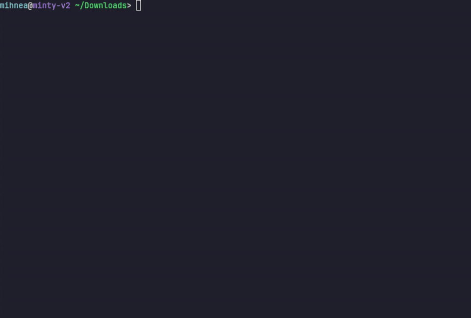

Tiny first run
Install, initialize, start, open. Add Python versions, packages, ports, and GPUs only when the project needs them.
Like venv, but for JupyterLab + Docker
Disposable JupyterLab environments that feel like Python virtualenvs. Each project gets readable Compose files, persistent notebooks, and Python-tagged images with Docker under the hood.
pip install jovykit
uv tool install jovykit
pip install jovykit && jovy init && jovy up -d && jovy open

Install, initialize, start, open. Add Python versions, packages, ports, and GPUs only when the project needs them.
Edit compose.yaml, Dockerfile, or
requirements.txt directly. JovyKit keeps the project
transparent.
work/ and .jupyter/ survive rebuilds and
container removal. Everything else can stay disposable.
Conda environments drift. Docker Compose is repetitive. Jupyter setup takes boilerplate. GPU configuration is fragile. Reproducing environments across machines is painful.
JovyKit keeps Dockerized Jupyter environments lightweight and readable: persistent notebooks, disposable containers, explicit GPU support, and plain files you can edit without learning another config format.
pip install jovykit
uv tool install jovykit
jovy init
jovy up -d
jovy open
jovy init --gpu all --python 3.13
JupyterLab, add-ons, Nitro CLI, uv, and the runtime needed to start fast.
Everyday data science, statistics, and classical ML without extra apt tools.
Lighter advanced stats, model inspection, APIs, visualization, spreadsheets, web scraping, and database clients.
The huge batteries-included stack for ML, AI, cloud, distributed, apps, graph, geospatial, and research tooling.
jovy config
services:
jovy:
build:
args:
JOVY_BASE_IMAGE: ghcr.io/mihneateodorstoica/jovykit:base-python-3.13
ports:
- 127.0.0.1:8888:8888
Compose output stays available when you need it. Edit
compose.yaml, Dockerfile, or
requirements.txt directly, and use
jovy compose ... whenever you want the raw Docker
Compose escape hatch.